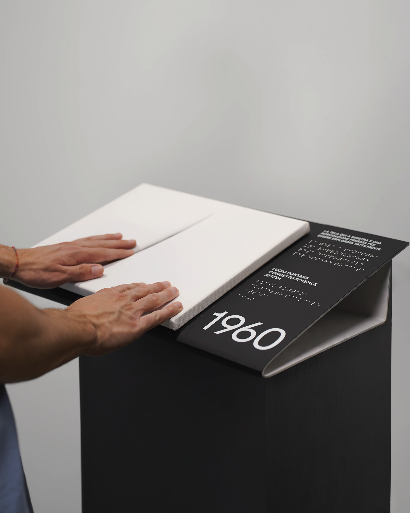
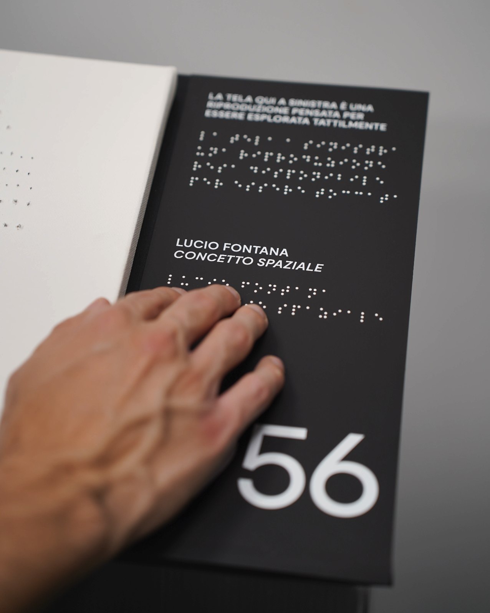

The Eternal Gesture is an exhibition project designed to make accessible a series of Lucio Fontana's works of art present within the Museo del 900' in Milan.
In line with this objective, scale reproductions of Fontana's triptych have been created; the materiality and depth of the cuts reproduced on the canvases allows people with visual impairments to tactilely enjoy the artworks. The individual reproductions are accompanied by text descriptions that are also translated into Braille to complete the enjoyment.
A printed brochure has also been designed with the aim of providing a tactile "experience" that can also be enjoyed individually. In fact, on it there is additional textual information, with its translation into Braille, to delve deeper into Fontana's artistic work.



By scanning the QR code on the brochure, one then accesses an audio content player, specifically designed to be easily used by blind people. The player implements a nonvisual interactive interface, taking advantage of the entire screen of the mobile device to manage user interactions without needing to see what is on the screen.